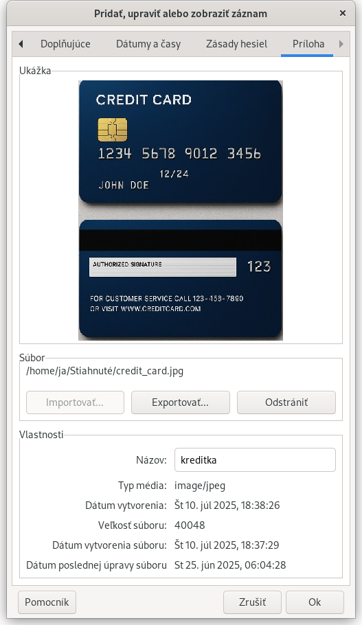

Zásady hesiel: pravidlá generovania náhodných hesiel
Príloha: možnosť priložiť obrázok k záznamu
Karta Príloha

Na tejto karte môžete k záznamu priložiť obrázok ako prílohu: príkladom použitia je uloženie skenu pasu, kreditnej karty alebo vodičského preukazu.
Názov: Obsahuje názov, prípadne popis obrázka.
Súbor: Toto pole zobrazuje cestu k súboru, ktorý ste importovali. Z bezpečnostných dôvodov sa odporúča pôvodný súbor zmazať z disku (po uložení zmnien záznamu), keďže už je v zašifrovanej podobe uložený v databáze.
Importovať: Prílohu môžete nahrať do databázy len ak ešte nie je žiadna nahratá alebo ak súčasnú prílohu odstránite.
Exportovať: Obrázok uložený v databáze môžete exportovať do súboru na disk v počítači.
Odstrániť: Odstráni obrázok z databázy, napr. keď už nie je potrebný alebo chcete následne importovať iný obrázok do databázy.
Upozornenie: Táto nová funkcionalita/špeciálna karta vlastností záznamu je k dispozícii len v prípade, že databáza je vo formáte v4 (experimentálne).
Toto sa dá dosiahnuť exportom databázy ktorá je zvyčajne vo formáte v3, do formátu v4.